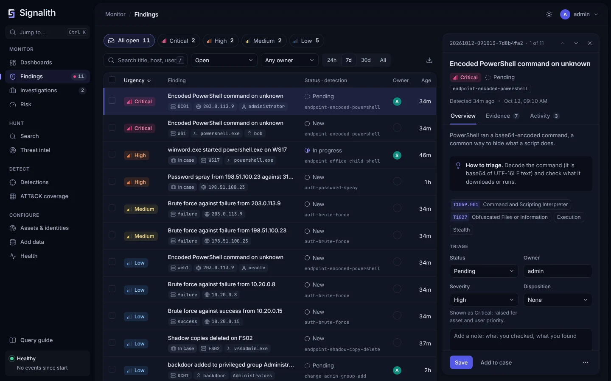
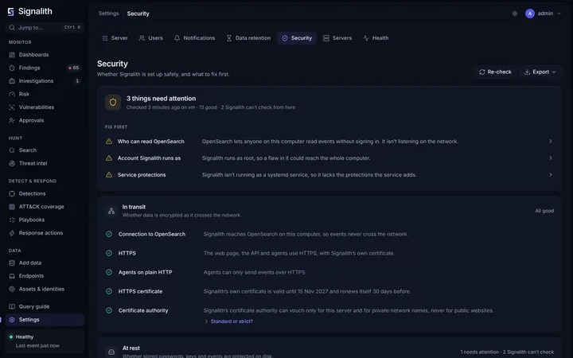

Search that reads like SPL
A pipe-based query language with stats, timechart, where and friends, CIM-style data models, autocomplete, and a visual builder that writes the query as you click.
Free and open source · Apache 2.0
Signalith is an open-source SIEM for Windows and Linux, inspired by Splunk Enterprise Security. Search every event, ask questions in plain English, detect threats with ATT&CK-mapped rules and triage findings together, on your own servers.

See it in action
A short tour with sample data: the posture dashboard, the findings queue, a search, an investigation case and a response action.
What it does
Signalith follows the shape of Splunk Enterprise Security, the way analysts already work, and puts it on free, open parts you can run anywhere.
A pipe-based query language with stats, timechart, where and friends, CIM-style data models, autocomplete, and a visual builder that writes the query as you click.
Type top 10 users with failed logins today and get the query, with how each phrase was read. Works offline; an AI model is optional, and only your question is ever sent.
Scheduled detections mapped to MITRE ATT&CK, Sigma import, an ATT&CK coverage matrix, and a triage queue with owners, statuses, dispositions and bulk actions.
Weak signals add risk to users and hosts instead of flooding the queue. One finding fires when an object crosses a threshold, weighted by your asset and identity lists.
Pick free feeds from a catalog, paste any list or STIX file, or connect a TAXII 2.1 server such as MISP or OpenCTI. Every event is matched, and | threatmatch works in search.
Group the findings of one incident with notes, searches and pinned evidence on a single timeline. Close the case and its findings close with it.
A security posture dashboard out of the box, plus your own: ask a question, pick a chart, done. Dashboards are YAML files, so they can live in Git.
The Add data page writes a ready Fluent Bit setup for Windows or Linux, with the address, token and certificate filled in. Syslog and CEF from network devices too.
No logs to hand? Load a week of activity for a fictional company with attacks hidden in it, watch detections fire, then remove it all with one click.
Easy queries
Writing queries is the hardest part of most SIEMs. In Signalith you can start in plain English, see exactly how your words became a query, and keep editing from there.
datamodel=Authentication action=failure earliest=@d
| top limit=10 userReal output of signalith ask, the built-in offline translator.
How it works
Signalith is a single Go program with the web UI built in. It adds the security layer on top of proven open-source pieces, so there is nothing proprietary to license.
Secure by default
A security tool should not be the weak spot. Signalith ships safe and tells you, in plain words, anything left to tighten.

Get started
Try it on your own computer with Docker, or install it as a service on Linux or Windows next to OpenSearch.
Install Docker Desktop (Windows or Mac) or Docker Engine (Linux), then get the code:
git clone https://github.com/jrsamsanchez/signalith
cd signalithStart OpenSearch and Signalith. The first start makes the passwords and certificates, so it takes a minute or two.
docker compose -f deploy/docker/docker-compose.yml up -dShow the admin password:
docker compose -f deploy/docker/docker-compose.yml exec signalith signalith initial-passwordOpen https://localhost:8080 and sign in as admin. Then go to Add data and choose Load sample data to see it in action.
Install OpenSearch 2.x, and build Signalith with Go (go build ./cmd/signalith).
Install it as a systemd service:
sudo install -m 0755 signalith /usr/local/bin/signalith
sudo useradd --system --no-create-home signalith
sudo signalith init -c /etc/signalith/signalith.yaml -opensearch http://127.0.0.1:9200
sudo chown -R signalith /etc/signalith /var/lib/signalith
sudo cp deploy/systemd/signalith.service /etc/systemd/system/
sudo systemctl enable --now signalithinit prints the admin password once. Open https://<server>:8080 and sign in as admin.
Install OpenSearch 2.x for Windows, and build signalith.exe with Go.
In PowerShell as Administrator, from the folder with signalith.exe and deploy\windows\install.ps1:
.\install.ps1 -OpenSearchUrl http://127.0.0.1:9200This installs and starts the Signalith service under its own account. Open https://localhost:8080 and sign in as admin.
Full instructions, upgrades and every setting are in the documentation.
Signalith is free to use, change and share under the Apache License 2.0. Star it, try it, and open an issue with what you would like next.